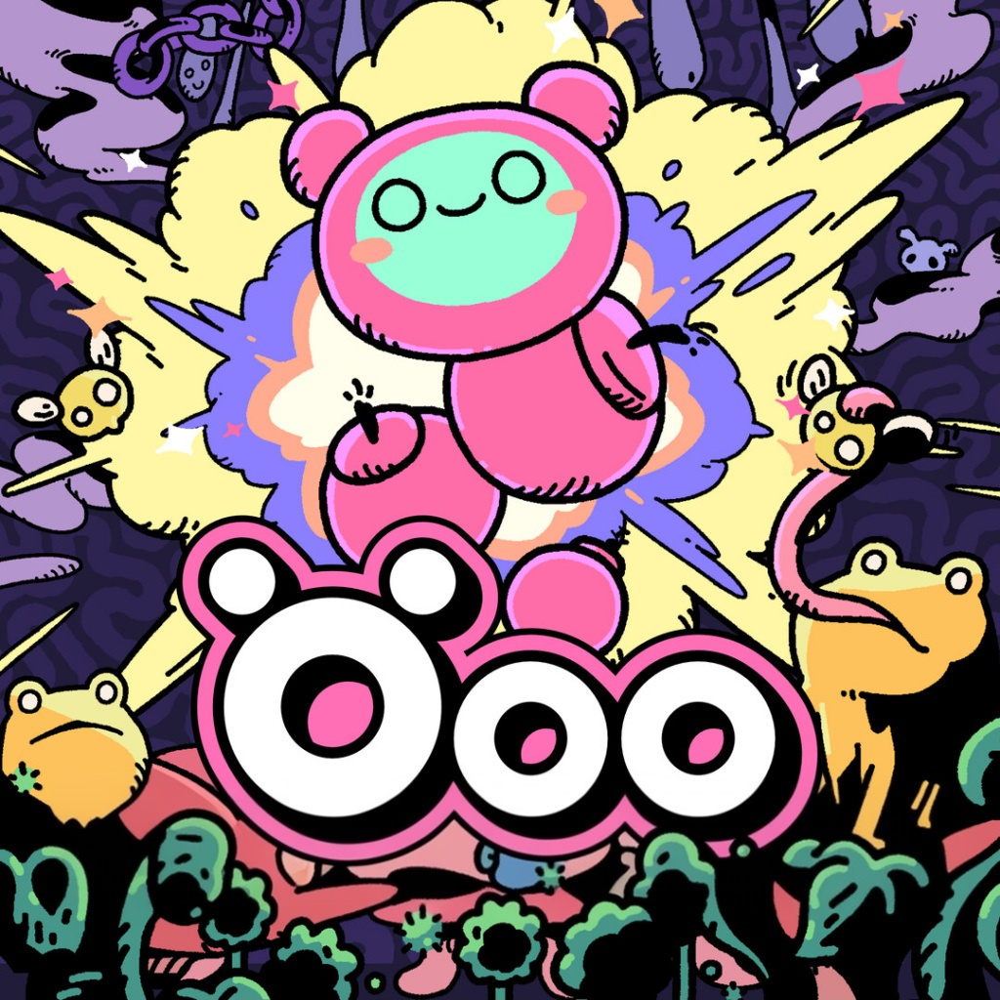

Öoo
Every archived year-end list appearance, including placement and points earned.
About the Game
A Bomb Caterpillar's Big Adventure!"Öoo" is a charming yet mysterious exploration puzzle platformer where you discover creative ways to use bombs!A Variety of Solutions Using Bombs!Discover unique ways to use bombs!Uncover hidden paths with clever bomb usage!Traverse the map to find hidden routes!FeaturesA dense experience that can be enjoyed in just 2–3 hoursA cute yet oddly mysterious worldDiverse puzzle solutions that change depending on how you use bombsNo text — enjoy the game without language barriersCute enough to delight even those who don’t like bugs!
| Released | 2025-08-07 |
|---|---|
| Developer | NamaTakahashi, Tsuyomi, tiny cactus studio |
| Publisher | NamaTakahashi |
| Genres | Action, Adventure, Indie |
| Platforms | PC |
SingleplayerSteam AchievementsFull controller supportSteam Cloud2DExplorationSurvivalPixel GraphicsControllerRetroCuteMystery
Where to Buy
Game information provided by RAWG.
Points by Year
List History
| Year | Source | List | Placement | Points |
|---|---|---|---|---|
| 2025 | Forbes | The 20 Best Games Of 2025 | 1 | 10 |
| 2025 | Inverse | The 25 Best Games Of 2025, Ranked | 24 | 3 |
| 2025 | Polygon | The 50 best games of 2025, as chosen by Polygon | 16 | 3 |
| 2025 | Slant Magazine | The Best Video Games of 2025 | 10 | 5 |